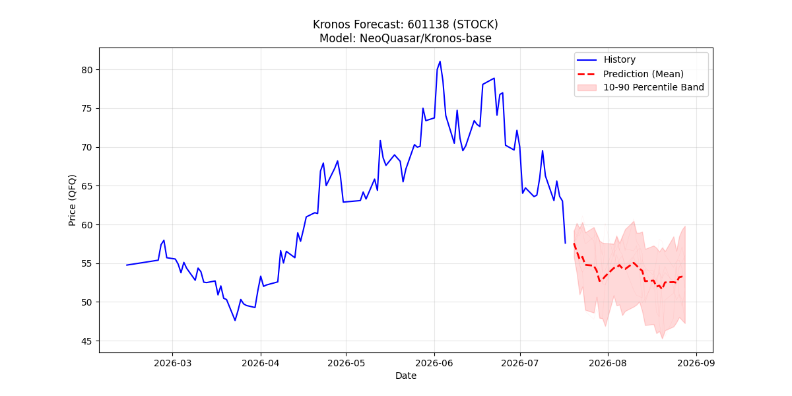
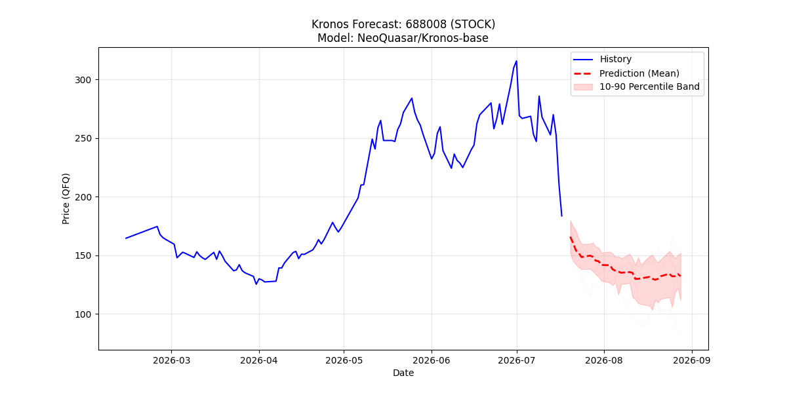
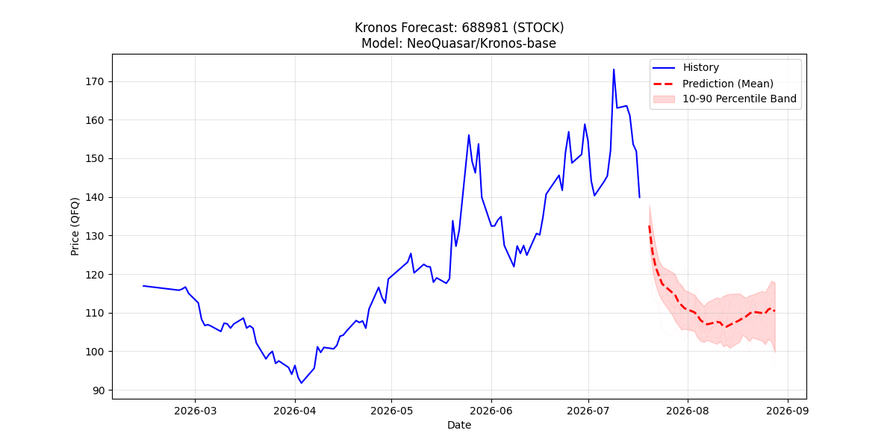
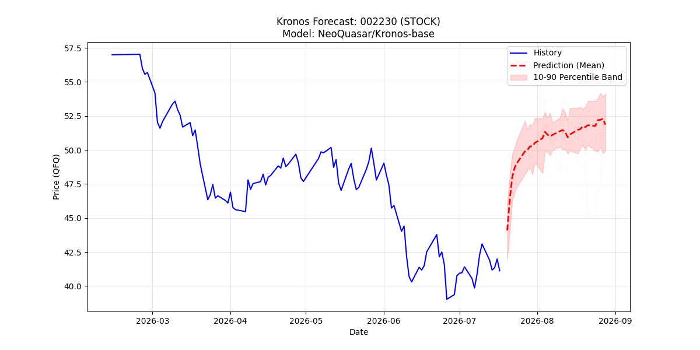
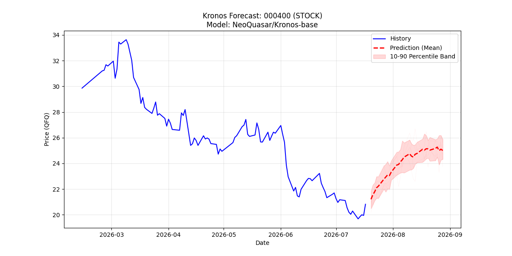
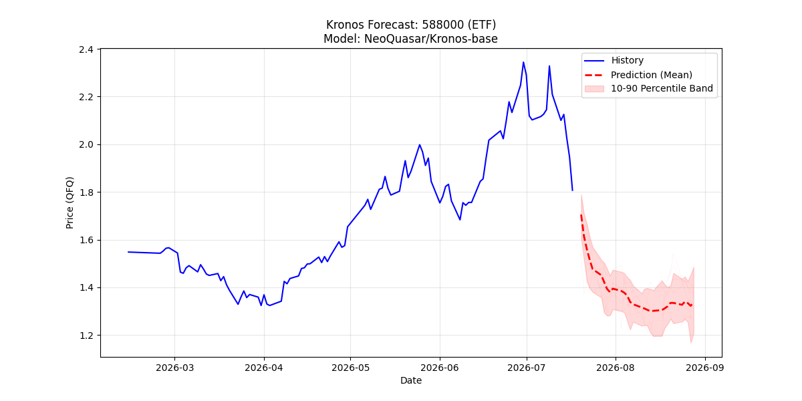

Kronos 帮我们分出了两类科技股，已涨透的 vs 待补涨的
10 只标的跑完 Kronos 30 日 K 线预测，方向分化明显。DOWN 5 只全部集中在已经涨过一大波的 AI 硬件龙头（工业富联、澜起、中芯、寒武纪、科创 50ETF），UP 4 只集中在尚未主升的应用/机器人/算力配套（科大讯飞、许继电气、大华、韦尔）。这不是"全面看空"，而是"结构性看多"，继续印证 40% 仓位左侧分批的判断，且优先加仓补涨方向。
推荐清单 · 四主线覆盖
| 主线 | 代码 | 名称 | 推荐档位 | 核心逻辑 |
|---|---|---|---|---|
| AI 算力 | 601138 | 工业富联 | 首选 | AI 服务器出货翻倍，Q1 净利 +102.6%，估值消化中 |
| 688256 | 寒武纪 | 观察 | 国产算力芯片龙头，Q1 营收 +160%，但估值极高 PE 分位 98%+ | |
| 半导体 | 002371 | 北方华创 | 首选 | 设备国产化订单饱满，Q1 营收 +25.8%，稼动率满载 |
| 688008 | 澜起科技 | 首选 | DDR5 + MRCD/MDB 接口芯片超预期，EPS +58.7% | |
| 688981 | 中芯国际 | 次选 | Q2 毛利率指引回升至 20~22%，代工产能供不应求 | |
| 603501 | 韦尔股份 | 次选 | 高端 CIS 持续国产化，毛利率企稳回升至 30%+ | |
| AI 应用 | 002230 | 科大讯飞 | 观察 | 大模型 + 教育硬件双轮驱动，前期涨幅小，待补涨 |
| 机器人 | 002236 | 大华股份 | 观察 | 物理 AI + 机器人视觉，达沃斯 2026 主题受益 |
| 电力设备 | 000400 | 许继电气 | 观察 | 算力中心配套电力设备，特高压 + 数据中心双景气 |
| 宽基 ETF | 588000 | 科创 50 ETF | 底仓 | 均衡覆盖硬科技，PEG 1.04，对冲细分赛道波动 |
首选：基本面 + 估值 + 技术三重占优，首笔即可建仓 · 次选：基本面强但估值或技术需二次确认 · 观察：等待触发信号（业绩/技术）后再进场 · 底仓：ETF 层面均衡工具
Kronos 预测结果汇总
| 代码 | 名称 | 现价 | 预测均值 | 30 日 % | P10 ~ P90 区间 | 方向 | 护栏 |
|---|---|---|---|---|---|---|---|
| 601138 | 工业富联 | 57.59 | 53.14 | -7.74% | 47.24 ~ 59.82 | DOWN | 通过 |
| 688256 | 寒武纪 | 1190.58 | 729.32 | -38.74% | 632.73 ~ 818.26 | DOWN | 伪信号 |
| 002371 | 北方华创 | 774.20 | 435.43 | -43.76% | 410.76 ~ 457.34 | DOWN | 伪信号 |
| 688008 | 澜起科技 | 183.60 | 132.18 | -28.01% | 111.55 ~ 151.91 | DOWN | 通过 |
| 688981 | 中芯国际 | 139.88 | 110.35 | -21.11% | 99.75 ~ 117.74 | DOWN | 通过 |
| 603501 | 韦尔股份 | 106.15 | 118.83 | +11.94% | 111.56 ~ 123.55 | UP | 通过 |
| 002230 | 科大讯飞 | 41.12 | 51.86 | +26.12% | 49.94 ~ 54.13 | UP | 通过 |
| 002236 | 大华股份 | 16.02 | 17.96 | +12.10% | 17.59 ~ 18.41 | UP | 通过 |
| 000400 | 许继电气 | 20.82 | 25.00 | +20.09% | 24.33 ~ 25.88 | UP | 通过 |
| 588000 | 科创 50 ETF | 1.81 | 1.34 | -26.05% | 1.21 ~ 1.49 | DOWN | 通过 |
Kronos-base 是零样本时间序列基础模型，对 A 股的涨跌停、事件性利好、机构定价机制 没有先验知识。护栏标记"伪信号"的预测（寒武纪首日跳空 -12.21%，北方华创首日跳空 -17.14%）为模型对高价股尺度掌握不准所致，不可用于决策，仅供技术面第二意见参考。
信号分化 · 结构性看多的关键证据
DOWN 阵营 · 已涨透的贵标的
- 601138 工业富联：-7.74% · 7 月高点 81 → 53 区间震荡
- 688008 澜起科技：-28.01% · 前期高估值消化
- 688981 中芯国际：-21.11% · Q2 毛利率虽指引改善但股价先跌
- 588000 科创 50 ETF：-26.05% · 宽基被龙头拖累
- 688256 寒武纪：-38.74%（伪信号） · 高价股尺度失真
UP 阵营 · 待补涨的便宜标的
- 002230 科大讯飞：+26.12% · 41 → 52 区间，AI 应用补涨
- 000400 许继电气：+20.09% · 算力配套 + 特高压双景气
- 002236 大华股份：+12.10% · 机器人视觉主题启动
- 603501 韦尔股份：+11.94% · CIS 高端化超预期
基于 Kronos 的调整后操作路径
科技板块 40% 目标仓位中，首笔 30% 资金建议如下配比：科创 50 ETF (588000) 12% · 科大讯飞 (002230) 5% · 许继电气 (000400) 4% · 工业富联 (601138) 4% · 北方华创 (002371) 3% · 澜起科技 (688008) 2%。UP 方向占比 3%，DOWN 方向的首选龙头占比 9%，ETF 底仓 12%。
科创 50 指数再跌 8% 或 UP 阵营任一标的回撤触及 P10 区间下沿 时补仓。补仓优先级：韦尔股份 > 大华股份 > 中芯国际 > 恒生科技 ETF。
UP 阵营任一标的 跌破 P10 下沿（如科大讯飞跌破 49.94、许继电气跌破 24.33），说明 Kronos 补涨逻辑失效，立即停止加仓该标的。DOWN 阵营中若中芯国际跌破 P10（99.75）说明代工景气度下修，触发整体减仓。
Kronos K 线预测图 · 精选 6 张





